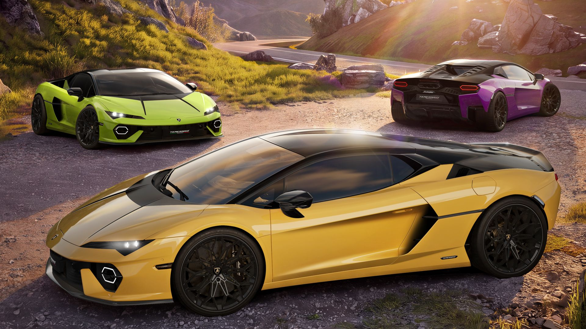
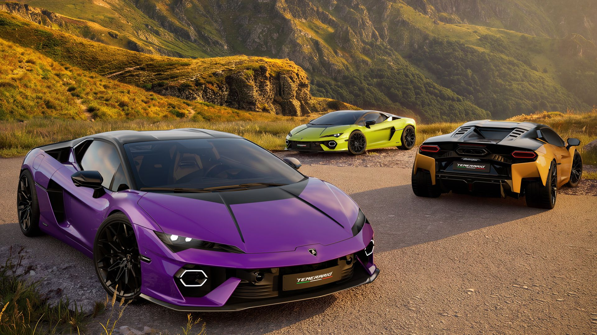
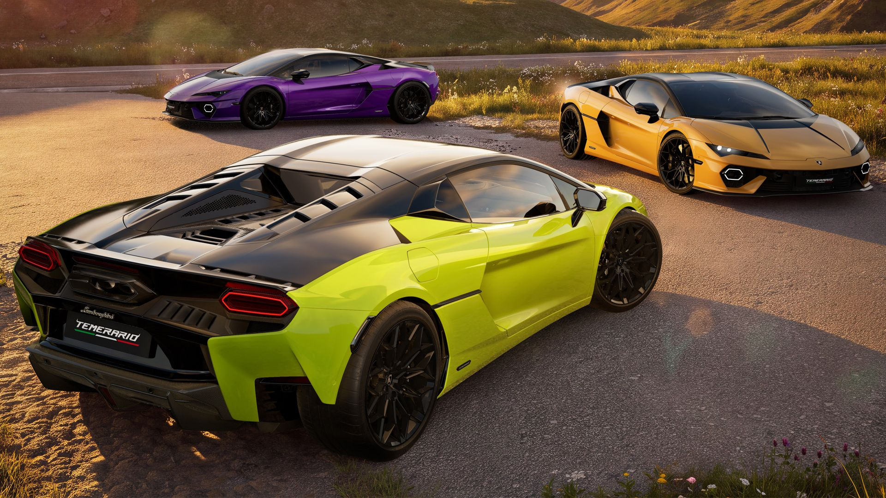
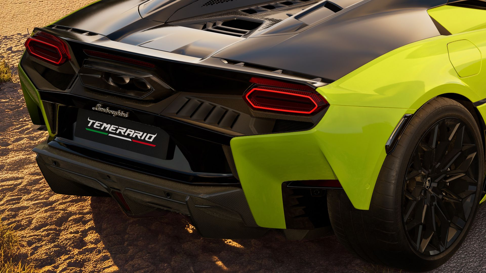

Тачки и Точка
@tachki
Тачки и Точка
@tachki
Lamborghini выпустила для Temerario серию Tettonero над ней поработало ателье Centro Stile.




Lamborghini выпустила для Temerario серию Tettonero — над ней поработало ателье Centro Stile.
Купить машину можно в пяти цветах: жёлтом, оранжевом, синем, зелёном или фиолетовом. Крыша и крышка двигателя при этом окрашены в глубокий чёрный Nero Noctis. В чёрный глянец покрашены также фары, бамперы, зеркала и диски. За отдельную опцию добавят чёрные полосы на капоте, которые напоминают о Lamborghini Miura.
Салон целиком чёрный, с контрастной строчкой: серой на боковинах кресел и в цвет кузова на центральной части. На подголовниках вышит щит Lamborghini.
Техника прежняя: гибрид на основе 4,0-литрового V8 с двумя турбинами и тремя электромоторами выдаёт 907 сил и 800 Нм. Мотор раскручивается больше 10 000 об/мин.
🚙 Тачки и Точка
Купить машину можно в пяти цветах: жёлтом, оранжевом, синем, зелёном или фиолетовом. Крыша и крышка двигателя при этом окрашены в глубокий чёрный Nero Noctis. В чёрный глянец покрашены также фары, бамперы, зеркала и диски. За отдельную опцию добавят чёрные полосы на капоте, которые напоминают о Lamborghini Miura.
Салон целиком чёрный, с контрастной строчкой: серой на боковинах кресел и в цвет кузова на центральной части. На подголовниках вышит щит Lamborghini.
Техника прежняя: гибрид на основе 4,0-литрового V8 с двумя турбинами и тремя электромоторами выдаёт 907 сил и 800 Нм. Мотор раскручивается больше 10 000 об/мин.
🚙 Тачки и Точка